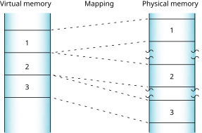
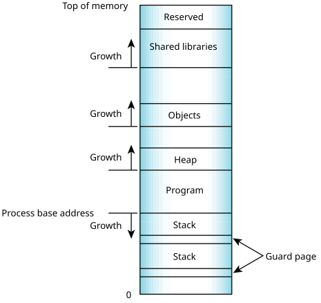
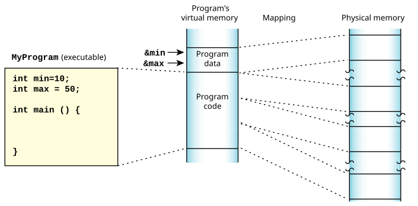
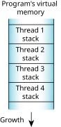
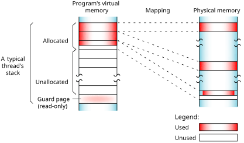
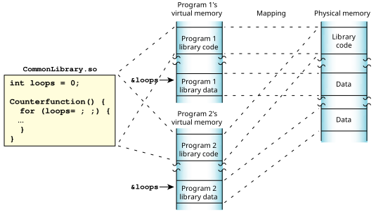
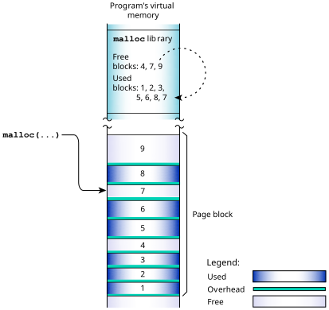
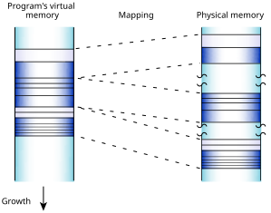
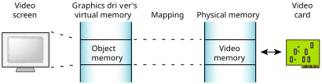

Let's consider memory management in general.

This robust architecture ensures that crashing one program has little or no effect on other programs throughout the system. If a program faults, you can be sure that the error is restricted to that process's operation.

The process manager allocates memory in small pages (typically 4 KB each). To determine the page size for your system, use the sysconf() function.
Your program's virtual address space includes the following categories:
- program
- stack
- shared library
- object
- heap

In reality, it's a little more complex. The various types of allocations, stacks, heap, shared objects, etc. have separate places where the memory manager starts looking for free virtual address space. The relative positions of the starting point for the search are as indicated in the diagram. Given those starting points, the memory manager starts looking up (if MAP_BELOW isn't set) or down (if MAP_BELOW is set) in the virtual address space of the process, looking for a free region that's big enough. This tends to make allocations group as the diagram shows, but a shared memory allocation, for example, can be located anywhere in the process address space.
The memory manager also supports address space layout randomization (ASLR), which randomizes the address of any mapping that doesn't specify MAP_FIXED. Use the procnto memory configuration options of -mr to use ASLR or -m~r to not use it. The default is to use ASLR. A child process normally inherits its parent's ASLR setting, but you can change it by using one of the following:
- the POSIX_SPAWN_ASLR_INVERT extended flag for posix_spawn() or the SPAWN_ASLR_INVERT flag for spawn() to toggle the setting of ASLR when you create a process from a program.
- posix_spawnattr_setaslr() to enable or disable ASLR in the child process. We recommend you use this function instead of POSIX_SPAWN_ASLR_INVERT or SPAWN_ASLR_INVERT.
To determine whether or not your process is using ASLR, use the DCMD_PROC_INFO devctl() command and test for the _NTO_PF_ASLR bit in the flags member of the procfs_info structure.
Program memory

Stack memory
Stack memory holds the local variables and parameters your program's functions use. Each process in QNX OS contains at least the main thread; each of the process's threads has an associated stack. When the program creates a new thread, the program can either allocate the stack and pass it into the thread-creation call, or let the system allocate a default stack size and address.

When the process manager creates a thread, it reserves the full stack in virtual memory, but not in physical memory. Instead, the process manager requests additional blocks of physical memory only when your program actually needs more stack memory. As one function calls another, the state of the calling function is pushed onto the stack. When the function returns, the local variables and parameters are popped off the stack.

At the end of each virtual stack is a guard page that the microkernel uses to detect stack overflows. If your program writes to an address within the guard page, the microkernel detects the error and sends the process a SIGSEGV signal. There's no physical memory associated with the guard page.
As with other types of memory, the stack memory appears to be contiguous in virtual process memory, but isn't necessarily so in physical memory.
Shared-library memory

Heap memory
Heap memory represents the dynamic memory used by programs at runtime. Typically, processes allocate and deallocate this memory using the malloc(), realloc(), calloc(), and free() functions. These first three functions ultimately rely on the mmap() function to reserve memory that the library distributes. The last one uses the munmap() function to return memory that's no longer needed.

Each allocation uses a small amount of fixed overhead to store internal data structures. Since there's a fixed overhead with respect to block size, the ratio of allocator overhead to data payload is larger for smaller allocation requests.
When your program uses malloc() to request a block of memory that the memory management library can't provide with its existing heap, it requests additional physical memory from the process manager. The library then returns the address of an appropriately sized block to the caller, and puts any remaining memory on a free list.
When memory is freed, the library merges adjacent free blocks and may, when appropriate, release physical memory back to the system.

Object memory
Object memory represents the areas that map into a program's virtual memory space that don't fit into the categories above, including physical mapping and shared memory objects. For example, the graphics driver may map the video card's memory to an area of the program's address space:
